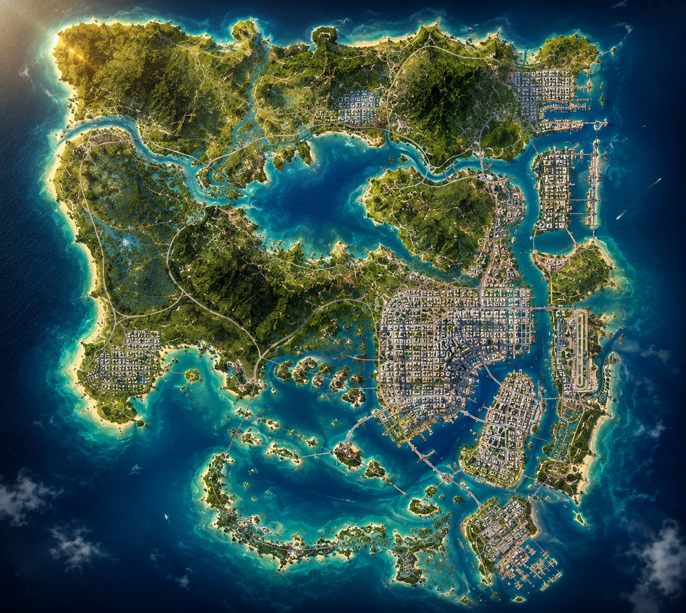

GTA
VI
HUB
HOME
MAP
NEWS
GUIDES
MEDIA
ABOUT
🛍 SHOP
☼
☾
♡ ◎
⌕
⚱
+
−
⟲

●
▰
▰
✥
★
●
▰
✥
●
★
●
▰
▰
★
●
★
●
★
✥
VICE CITY
MAP
🖱
DRAG
Move Map 🖱
SCROLL
Zoom
CLICK
Select Marker
ESC
Close Panel
×
LOCATION DETAILS